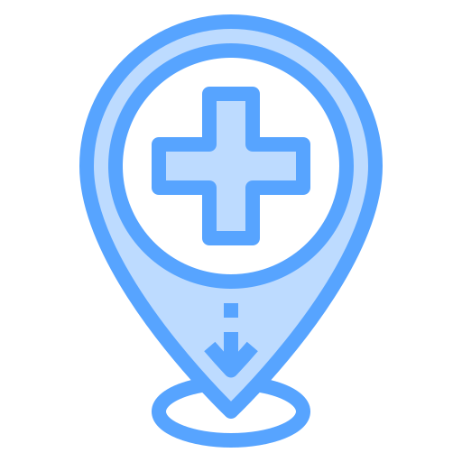

💙 Mês Mundial de Combate ao Câncer de Próstata
Exames Realizados este mês.
Chance de cura com diagnóstico precoce.
Clínicas e Postos Parceiros Ativos.

Idade recomendada para início do rastreamento.
| Horário | Paciente | Idade | Tipo de Exame | Médico Urologista | Status do Exame |
|---|---|---|---|---|---|
| 08:00 | João da Silva | 45 | Ultrasonografia de Próstata | Dr. Carlos Mendes | Concluído |
| 08:30 | Mario Oliveira | 52 | Ultrassonografia de Próstata | Dr. Paulo Costa | Aguardando |
| 09:00 | Pedro Santos | 38 | Consulta Preventiva | Dr. Carlos Mendes | Em andamento |
| 09:30 | Mael Paulo Souza | 61 | Cistoscopia | Dr. Ricardo Almeida | Aguardando |
| 10:00 | João Paulo | 47 | Biópsia | Dr. Paulo Costa | Concluído |
| 10:30 | Hildo Paulo | 77 | Ultrassonografia de Próstata | Dr. Ricardo Almeida | Cancelado |
| 11:00 | Roberto Martins | 67 | Exame de PSA | Dr. Carlos Mendes | Em andamento |
| 13:30 | Antônio Carvalho | 59 | Consulta Preventiva | Dr. Ricardo Almeida | Concluído |